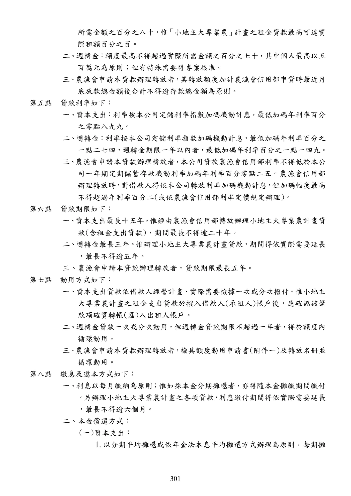

農業紮根貸款
手冊頁：301 PDF頁：303／359
{kind=link}

展開查看PDF原始文字層
複雜表格欄列可能因文字層順序失真，請搭配原頁預覽查閱。
所需金額之百分之八十 ， 惟 「小地主大專業農」 計畫之租金貸款最高可達實 際租額百分之百。 二 、 週轉金： 額度最高不得超過實際所需金額之百分之七十 ，其中個人最高以五 百萬元為原則；但有特殊需要得專案核准。 三 、 農漁會申請本貸款辦理轉放者 ， 其轉放額度加計農漁會信用部申貸時最近月 底放款總金額後合計不得逾存款總金額為原則。 第五點 貸款利率如下： 一 、 資本支出： 利率按本公司定儲利率指數加碼機動計息， 最低加碼年利率百分 之零點八九九。 二 、 週轉金： 利率按本公司定儲利率指數加碼機動計息， 最低加碼年利率百分之 一點二七四，週轉金期限一年以內者，最低加碼年利率百分之一點一四九。 三 、 農漁會申請本貸款辦理轉放者 ， 本公司貸放農漁會信用部利率不得低於本公 司一年期定期儲蓄存款機動利率加碼年利率百分零點二五。農漁會信用部 辦理轉放時 ， 對借款人得依本公司轉放利率加碼機動計息 ， 但加碼幅度最高 不得超過年利率百分二(或依農漁會信用部利率定價規定辦理)。 第六點 貸款期限如下： 一、資本支出最長十五年。 惟經由農漁會信用部轉放辦理小地主大專業農計畫貸 款(含租金支出貸款)，期間最長不得逾二十年。 二 、 週轉金最長三年。 惟辦理小地主大專業農計畫貸款， 期間得依實際需要延長 ，最長不得逾五年。 三、農漁會申請本貸款辦理轉放者，貸款期限最長五年。 第七點 動用方式如下： 一 、 資本支出貸款依借款人經營計畫、 實際需要檢據一次或分次撥付。 惟小地主 大專業農計畫之租金支出貸款於撥入借款人(承租人)帳戶後，應確認該筆 款項確實轉帳(匯)入出租人帳戶。 二 、 週轉金貸款一次或分次動用 ，但週轉金貸款期限不超過一年者 ，得於額度內 循環動用。 三 、 農漁會申請本貸款辦理轉放者 ， 檢具額度動用申請書(附件一)及轉放名冊並 循環動用。 第八點 繳息及還本方式如下： 一 、 利息以每月繳納為原則； 惟如採本金分期攤還者 ，亦得隨本金攤繳期間繳付 。 另辦理小地主大專業農計畫之各項貸款 ， 利息繳付期間得依實際需要延長 ，最長不得逾六個月。 二、本金償還方式： (一)資本支出： 1.以分期平均攤還或依年金法本息平均攤還方式辦理為原則，每期攤